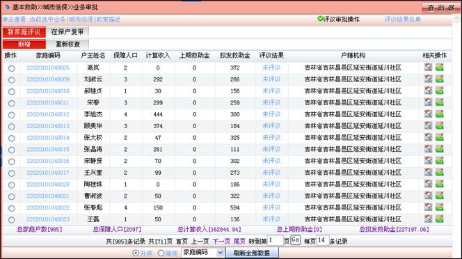
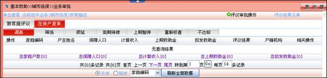
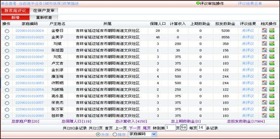
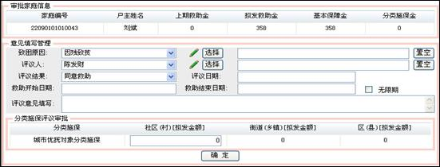
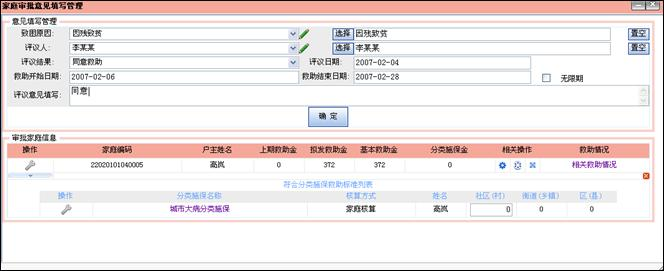
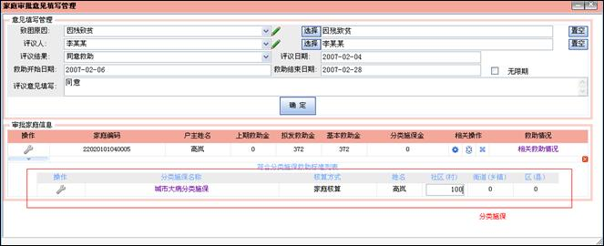

社区初审
以社区操作员身份等录进系统，然后点击菜单“基本救助>>城市低保>>业务审批”,进入城市低保审批页面，如下所示

(4) 评议审批操作
系统默认或单击 中的“评议审批操作”打开评议审批操作页，本页有两个子页“新家庭评议”和“在保户复审”组成。
单击  中的“新家庭评议”进入该处理界面，处理新申请救助的家庭对象。
中的“新家庭评议”进入该处理界面，处理新申请救助的家庭对象。
ü 新增：第一次申请并且符合业务标准的家庭；
ü 重新核查：在审批过程中，审批意见选择“重新核查”的家庭。
单击 中的“在保户复审”进入该处理页面，其操作对象都为该业务保障户，只有改变此家庭与业务相关信息时，经过系统计算，此家庭会被分配到调高、降低、不达标选项里然后进行审批，如下所示

ü 调高：由于家庭信息变化，导致享受的保障金额增加，视为调高的保障对象，需要重新审批；
ü 降低：由于家庭信息变化，导致享受的保障金额减少，视为降低的保障对象，需要重新审批；
ü 顺延：此家庭已经是该业务在保户并且保障金额没有变化，不需要再次审批；
ü 到期待续：是低保家庭复审后待遇保留的特殊形式，具体指低保家庭在与审批机构约定的保障期满后，家庭人员及收入没有变化，经复审操作后低保待遇转入下一个约定保障期。
ü 上期暂停：保留在保户身份，但是不发放保障金额；
ü 重新核查：在审批过程中，审批意见选择“重新核查”的家庭；
ü 不达标：上次审批符合但因为家庭信息修改，当前不符合业务标准的家庭。
通过查询器检索出符合条件的家庭列表，点击“”按钮进行新家庭评议，如下所示

弹出评议审批意见页面，填写审批信息，

点击“”图标可以添加或修改“致困原因”，填写完如下所示

如果家庭有分类施保，在下面填写分类施保金额，跟随城市低保一起审批，如下所示

点击“确定”按钮，审批结束。
注：在下一级未审批时，重复上述操作，可以修改审批信息。
(5) 评议结果名单
单击 中的“评议结果名单”打开评议结果名单页，本页有三个子页“拟发放名单”、“拟不发名单”和“重新核查”组成。
单击 中的“拟发放名单”进入该处理界面，功能如下所示
ü 新增：第一次给发放保障金的家庭；
ü 调高：发放保障金调高的家庭；
ü 降低：发放保障金降低的家庭；
ü 顺延：发放保障金没有变化的家庭；
ü 渐退：该家庭已经不符合业务条件，以每月减少保障金比例发放；
ü 恢复：恢复停保户为在保户，并且发放保障金。
单击 中的“拟不发名单”进入该处理界面，功能如下所示
ü 暂停：保留在保户身份，不发放金额；
ü 终止：停止发放金额；
ü 未达标：不符合保障标准；
ü 未评议：审批未完成。
单击 中的“重新核查”进入该处理界面，处理需要重新核查的家庭列表。
注：点击“刷新全部数据”按钮，会重新计算家庭保障标准，如果是顺延的家庭，会被分配到“提高”、“降低”、“不达标”文件夹里面。但是如果家庭社区已经审批过了，将不会作用这些家庭。